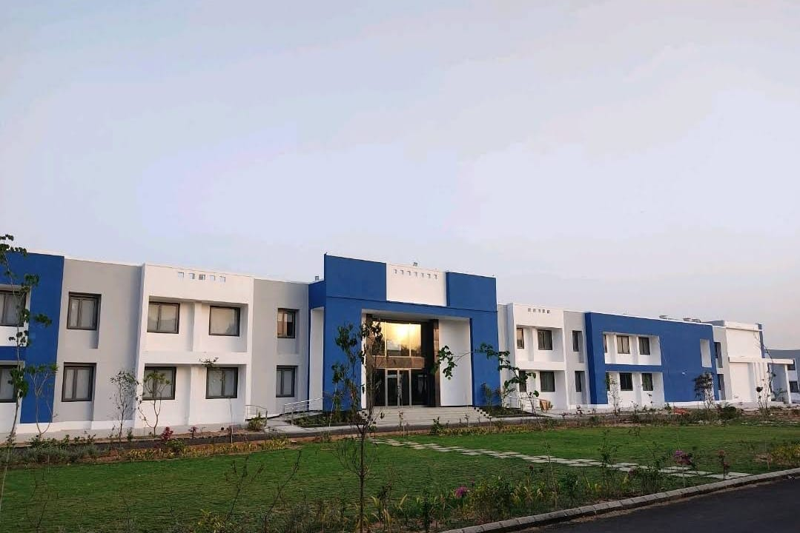
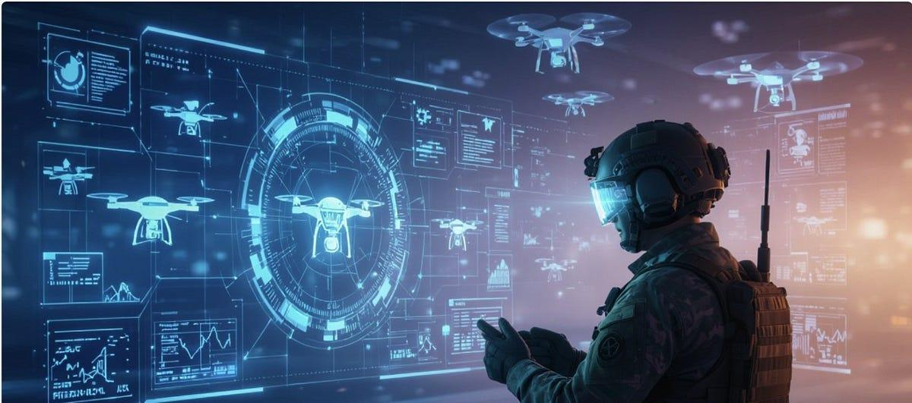
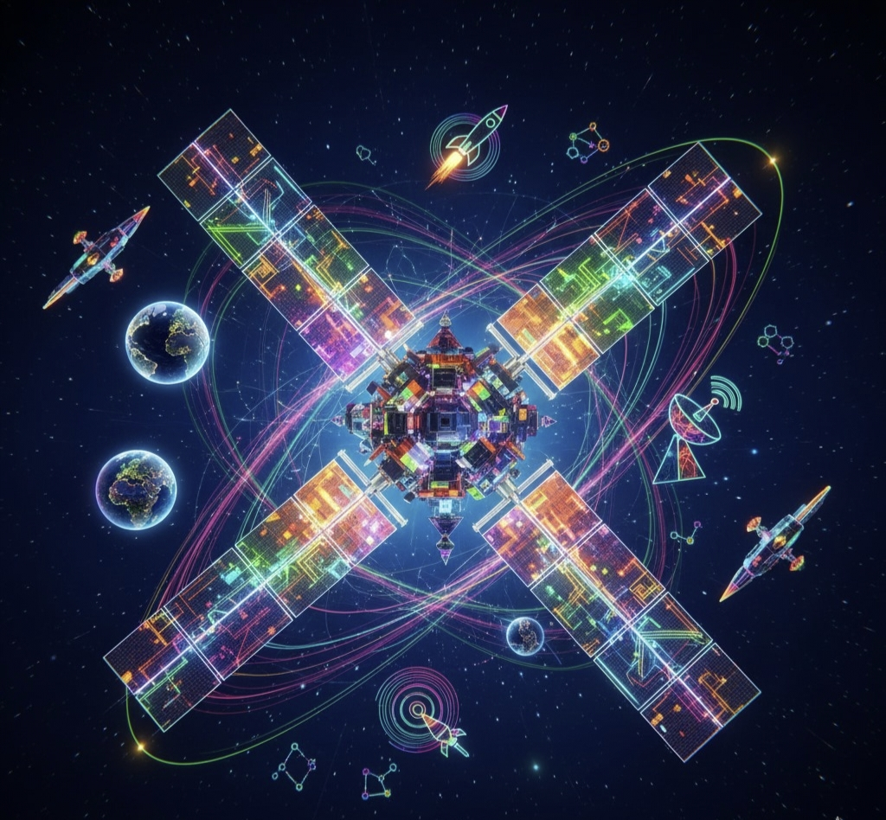

Welcome to Hack Celestia – the fifth season of our hackathon! This 48-hour event brings together the brightest minds from around the world, challenging innovators, creators, and tech enthusiasts to collaborate, compete, and bring solutions to life. Hack Celestia is a space for pushing boundaries, building impactful projects, and connecting with a global community of future-focused thinkers.
International Participation | Diverse Challenges | 3 Days of Non-Stop Innovation
The countdown to brilliance begins now—don’t miss your chance to be part of something extraordinary!
You can view the reference ppt template here: Reference ppt








-
Autonomous Decision Intelligence:
Modern organizations operate in rapidly changing environments where timely and informed decisions are critical. How can autonomous AI agents analyze evolving information, reason through complex situations, and recommend or execute decisions while keeping humans in control?
-
Multi-Agent Collaborative Systems:
Many real-world challenges require multiple specialized entities working together toward a shared objective. How can intelligent AI agents communicate, coordinate, and collaborate to solve complex problems more efficiently than a single AI system?
-
Autonomous Scientific Discovery:
Scientific research involves hypothesis generation, experimentation, and continuous validation across massive knowledge bases. How can AI agents autonomously assist researchers by planning investigations, evaluating evidence, and accelerating the discovery process?
-
Intelligent Crisis Response Agents:
Disaster response and emergency management demand rapid coordination, adaptive planning, and efficient resource allocation under uncertain conditions. How can autonomous AI agents collaborate to assess evolving situations and support timely, data-driven response strategies?
-
Autonomous Enterprise Operations:
Organizations spend significant resources managing repetitive workflows, fragmented information, and cross-functional processes. How can AI agents autonomously coordinate business operations, optimize workflows, and improve organizational efficiency while ensuring transparency and accountability?
-
Responsible & Trustworthy Agentic AI:
As AI agents become increasingly autonomous, ensuring safe, transparent, and ethical decision-making becomes essential. How can we design agentic AI systems that align with human values, provide explainable reasoning, and operate responsibly in high-impact environments?
Agentic AI
-
Autonomous Threat Detection & Response:
Cyber threats are becoming increasingly sophisticated, making manual monitoring and incident response difficult at scale. How can intelligent systems detect, analyze, and respond to evolving cyber threats in real time while minimizing human intervention and reducing response time?
-
Securing the AI-Driven Digital Ecosystem:
As AI becomes deeply integrated into critical systems, new attack vectors such as model manipulation, prompt injection, and data poisoning continue to emerge. How can we build secure AI ecosystems that are resilient against evolving threats while maintaining trust and reliability?
-
Cyber Resilience for Critical Infrastructure:
Critical infrastructure such as healthcare, energy, transportation, and financial systems faces growing cyber risks that can disrupt essential services. How can innovative cybersecurity solutions strengthen resilience, ensure business continuity, and enable rapid recovery from cyber incidents?
-
Privacy-Preserving Digital Identity:
The increasing use of digital services has made identity theft, unauthorized access, and privacy breaches major global concerns. How can next-generation identity and access management solutions enhance security while preserving user privacy and delivering seamless authentication?
-
Building Trust in the Digital Future:
As digital interactions become increasingly complex, ensuring trust, transparency, and accountability is more important than ever. How can cybersecurity innovations improve digital trust through secure communication, data integrity, and proactive risk management across modern digital platforms?
Cyber Security
-
Intelligent Situational Awareness:
Modern defense and security operations require rapid interpretation of vast amounts of information from multiple sources. How can advanced technologies provide real-time situational awareness, actionable intelligence, and decision support in dynamic operational environments?
-
Autonomous Systems for Strategic Operations:
Autonomous technologies are transforming the way critical missions are planned and executed across land, air, sea, and cyber domains. How can intelligent autonomous systems enhance mission effectiveness while ensuring reliability, adaptability, and human oversight?
-
Secure & Resilient Defense Communications
Mission-critical operations depend on uninterrupted, secure, and reliable communication in contested and rapidly changing environments. How can next-generation technologies strengthen communication resilience, interoperability, and information security under adverse conditions?
-
Next-Generation Border & Critical Infrastructure Security:
Protecting borders and strategic infrastructure requires continuous monitoring, rapid threat assessment, and coordinated response capabilities. How can innovative technologies improve surveillance, early warning, and operational readiness while minimizing false alarms?
-
Intelligent Logistics & Mission Readiness:
Efficient logistics and resource management are essential for sustained operational capability during complex missions. How can intelligent technologies optimize supply chains, resource allocation, and predictive maintenance to improve mission readiness and resilience?
-
Cyber Defense for Strategic Systems:
Critical defense and national infrastructure face increasingly sophisticated cyber threats that can disrupt essential operations. How can advanced cybersecurity solutions proactively detect, prevent, and respond to threats while ensuring the resilience of strategic systems?
-
Human–Machine Teaming for Mission Success:
Future defense operations will rely on seamless collaboration between personnel and intelligent systems operating in high-pressure environments. How can technology enhance human decision-making, coordination, and operational effectiveness while keeping humans in control of critical actions?
-
Dual-Use Technologies for National Security:
Emerging technologies often have applications in both civilian and strategic domains, creating opportunities for broader societal impact. How can innovative, dual-use technologies strengthen national security, disaster resilience, and public safety while supporting sustainable development?
Defense Tech & Strategic Technologies
-
Intelligent Financial Inclusion:
Millions of individuals and small businesses remain underserved by traditional financial systems due to limited access, lack of credit history, or geographic barriers. How can innovative technologies create secure, inclusive, and accessible financial services that empower underserved communities and promote economic participation?
-
The Future of Digital Payments:
The rapid evolution of digital commerce demands payment systems that are faster, more secure, and globally interoperable. How can next-generation financial technologies enable seamless, trusted, and frictionless digital transactions across individuals, businesses, and borders?
-
AI-Driven Financial Risk & Fraud Intelligence:
As digital financial ecosystems expand, fraud, financial crime, and emerging risks become increasingly sophisticated. How can intelligent systems proactively identify, assess, and mitigate financial risks while ensuring trust, compliance, and a seamless user experience?
-
Embedded Finance for the Digital Economy:
Financial services are increasingly becoming an integral part of digital platforms rather than standalone products. How can innovative solutions seamlessly integrate payments, lending, insurance, and investment services into everyday digital experiences while ensuring accessibility, security, and scalability?
-
Next-Generation Digital Asset & Identity Ecosystem:
Digital economies rely on trusted identities and secure ownership of financial and digital assets. How can technology enable interoperable, privacy-preserving digital identities and asset ecosystems that empower users while strengthening trust and regulatory compliance?
-
Intelligent Financial Decision Support:
Individuals and businesses generate vast amounts of financial data but often struggle to convert it into actionable insights. How can intelligent financial systems transform complex financial information into personalized recommendations, strategic planning tools, and data-driven decision support?
FinTech & Digital Economy
-
AI for Scientific Discovery:
Scientific research generates vast amounts of knowledge, making it increasingly difficult to identify meaningful patterns and breakthrough opportunities. How can Generative AI accelerate scientific discovery by synthesizing knowledge, generating hypotheses, and supporting interdisciplinary research?
-
Generative AI for Collective Intelligence:
Solving global challenges requires integrating knowledge from diverse disciplines, perspectives, and data sources. How can Generative AI synthesize fragmented information, uncover hidden connections, and generate actionable insights to enable collaborative intelligence?
-
AI-Powered Digital Knowledge Systems:
Organizations and institutions generate enormous volumes of unstructured information that often remain underutilized. How can Generative AI transform complex information into structured knowledge, meaningful insights, and context-aware recommendations for informed decision-making?
-
Generative AI for Future Scenario Generation:
Governments, enterprises, and researchers must prepare for uncertain futures shaped by rapidly evolving technologies and global events. How can Generative AI generate realistic simulations and alternative future scenarios to support strategic planning and resilient decision-making?
-
Responsible & Trustworthy Generative AI:
As AI-generated content becomes increasingly influential, ensuring reliability, fairness, and accountability is more critical than ever. How can we design Generative AI systems that produce trustworthy outputs while minimizing bias, misinformation, and harmful content?
-
Multimodal Generative Intelligence:
The future of AI lies in understanding and generating content across text, images, audio, video, and structured data simultaneously. How can Generative AI seamlessly integrate multiple modalities to create intelligent, context-aware, and interactive experiences?
-
AI for Knowledge Preservation & Cultural Heritage:
Languages, traditions, historical records, and cultural knowledge are at risk of being lost over time. How can Generative AI preserve, reconstruct, and reimagine humanity's cultural and intellectual heritage through interactive and accessible digital experiences?
-
The Future of Human Creativity:
As Generative AI becomes a powerful creative tool, the challenge is enabling meaningful collaboration without diminishing human originality. How can Generative AI empower creators by enhancing imagination, accelerating ideation, and unlocking new forms of artistic and professional expression?
Generative AI
-
AI as a Collaborative Intelligence Partner:
As AI becomes increasingly capable, the challenge is not replacing humans but enhancing their abilities. How can human-centered AI systems collaborate with people to improve creativity, productivity, and decision-making while ensuring meaningful human oversight?
-
Human–AI Teams for Complex Problem Solving:
Global challenges often require the combined strengths of human expertise, creativity, and AI-driven intelligence. How can collaborative AI systems empower humans to solve complex, interdisciplinary problems more effectively than either could alone?
-
Building Trust in Human–AI Collaboration:
For AI to become a reliable partner, users must understand and trust its recommendations and actions. How can Human–AI collaboration systems improve transparency, explainability, and accountability while enabling confident human decision-making?
-
Adaptive AI for Personalized Collaboration:
Every individual works differently, with unique goals, preferences, and expertise. How can AI dynamically adapt to each user's context, working style, and objectives to create personalized and seamless collaboration experiences?
-
AI for Inclusive Collaboration:
Effective collaboration is often limited by language barriers, accessibility challenges, and diverse skill levels. How can AI enable inclusive collaboration by making communication, knowledge sharing, and teamwork more accessible to everyone?
-
Human–AI Collaboration for Scientific Discovery:
Scientific breakthroughs increasingly rely on interdisciplinary collaboration and rapid knowledge synthesis. How can AI become an intelligent research partner that complements human expertise, accelerates discovery, and supports evidence-based innovation?
-
Human–AI Collaboration for Crisis & Disaster Response:
Emergency response requires rapid coordination, accurate information, and informed decision-making under uncertainty. How can AI collaborate with human responders by providing real-time insights, adaptive recommendations, and coordinated support while ensuring human control over critical decisions?
Human–AI Collaboration
-
Intelligent Edge Computing for Real-Time Decision Making:
As billions of connected devices generate continuous streams of data, relying solely on cloud computing introduces latency and scalability challenges. How can Edge AI enable real-time, autonomous decision-making while minimizing latency, bandwidth usage, and energy consumption?
-
Smart Connected Infrastructure:
Modern cities, industries, and public infrastructure depend on interconnected devices that must operate reliably and efficiently. How can IoT and Edge AI create intelligent, self-monitoring infrastructure that improves operational efficiency, resilience, and sustainability?
-
Autonomous IoT Ecosystems:
Connected devices often operate independently despite sharing common objectives and environments. How can IoT systems collaborate, share intelligence, and autonomously coordinate actions to create adaptive and resilient connected ecosystems?
-
Predictive Intelligence for Connected Devices:
Unexpected equipment failures and operational disruptions can lead to significant economic and societal impact. How can IoT and Edge AI predict failures, optimize maintenance strategies, and enhance system reliability through continuous monitoring and intelligent analytics?
-
Secure & Trusted Connected Devices:
As the number of connected devices grows exponentially, ensuring security, privacy, and trust across distributed networks becomes increasingly challenging. How can innovative solutions secure IoT ecosystems while enabling seamless communication and protecting sensitive data?
-
Edge AI for Sustainable Smart Environments:
Smart homes, campuses, factories, and cities require intelligent systems that optimize energy, resources, and environmental impact. How can Edge AI and IoT enable sustainable, adaptive environments through localized intelligence and efficient resource management?
-
The Future of Connected Intelligence:
The next generation of digital ecosystems will rely on seamless collaboration between edge devices, cloud platforms, and intelligent services. How can IoT and Edge AI create scalable, interoperable, and autonomous connected systems capable of solving real-world challenges across industries?
IoT, Edge AI & Connected Devices
-
Accelerating Drug Discovery & Development:
Developing safe and effective medicines is a complex, time-consuming, and resource-intensive process. How can innovative technologies accelerate drug discovery, optimize research workflows, and improve the efficiency of pharmaceutical development?
-
Precision Medicine for Personalized Healthcare:
Patients often respond differently to the same treatment due to genetic, environmental, and lifestyle factors. How can emerging technologies enable personalized healthcare solutions that improve diagnosis, treatment planning, and patient outcomes?
-
Next-Generation Diagnostics:
Early and accurate disease detection remains one of the greatest challenges in healthcare. How can advanced technologies enhance diagnostic capabilities to enable faster, more accessible, and reliable detection of diseases across diverse healthcare settings?
-
Intelligent Pharmaceutical Supply Chains:
Ensuring the availability, quality, and traceability of medicines across global supply chains is becoming increasingly challenging. How can innovative solutions improve transparency, resilience, and efficiency throughout the pharmaceutical supply ecosystem?
-
Sustainable Biotechnology for Global Challenges:
Biotechnology has the potential to transform healthcare, agriculture, and environmental sustainability. How can biotechnology-driven innovations address global challenges while promoting sustainable, scalable, and ethical solutions for the future?
-
Digital Transformation in Clinical Research:
Clinical trials often face challenges related to participant recruitment, data management, and regulatory compliance. How can digital technologies improve the efficiency, accessibility, and reliability of clinical research while ensuring patient safety and data integrity?
-
Building Resilient Healthcare & Life Science Ecosystems:
Global health challenges demand stronger collaboration between researchers, healthcare providers, pharmaceutical companies, and policymakers. How can innovative life science solutions strengthen healthcare ecosystems, accelerate innovation, and improve public health outcomes?
Pharmaceutical & Biotechnology
-
The Future of Immersive Collaboration:
As remote work, education, and global collaboration continue to evolve, traditional digital interactions often fail to replicate real-world engagement. How can immersive technologies create meaningful, interactive, and collaborative virtual environments that redefine how people connect and work together?
-
Intelligent Digital Worlds:
Virtual environments are becoming increasingly complex, yet many remain static and disconnected from real-world context. How can immersive technologies create dynamic, adaptive, and intelligent digital worlds that evolve based on user interactions and environmental changes?
-
The Next Generation of Digital Identity:
As users increasingly participate in virtual ecosystems, managing secure, interoperable, and privacy-preserving digital identities becomes essential. How can innovative technologies enable trusted digital identities that seamlessly span multiple immersive platforms?
-
Immersive Learning & Skill Development:
Traditional learning methods often struggle to provide realistic, hands-on experiences for complex skills. How can virtual and immersive technologies create engaging, experiential learning environments that improve knowledge retention and practical skill development?
-
Human-Centered Spatial Computing:
The future of digital interaction extends beyond screens into immersive, spatial experiences that blend the physical and virtual worlds. How can spatial computing create intuitive, natural, and accessible interactions that enhance everyday life and productivity?
-
Digital Twins for the Virtual Future:
Industries are increasingly adopting digital twins to simulate, monitor, and optimize physical systems. How can immersive technologies transform digital twins into interactive environments for real-time visualization, collaboration, and decision-making across diverse domains?
-
Inclusive & Accessible Virtual Experiences:
As immersive technologies become mainstream, ensuring accessibility and inclusivity for users with diverse abilities, languages, and backgrounds is critical. How can virtual environments be designed to provide equitable, engaging, and universally accessible experiences?
-
Sustainable Metaverse Ecosystems:
The rapid growth of immersive technologies presents challenges related to scalability, interoperability, and environmental impact. How can innovative solutions enable sustainable, secure, and interconnected virtual ecosystems that support the future of digital interaction?
Metaverse & Virtual Reality
-
Intelligent Earth Observation:
Satellites continuously capture vast amounts of data about our planet, yet transforming this information into actionable insights remains a significant challenge. How can advanced technologies enable real-time analysis of satellite data to support environmental monitoring, disaster management, and sustainable development?
-
Next-Generation Satellite Communication:
As global connectivity expands, satellite communication systems must become more reliable, efficient, and accessible. How can innovative technologies enhance satellite-based communication to deliver secure, resilient, and seamless connectivity across remote and underserved regions?
-
Autonomous Space Mission Support:
Future space missions will operate in increasingly complex and autonomous environments with limited human intervention. How can intelligent systems support mission planning, resource optimization, and autonomous decision-making to improve the safety and success of space operations?
-
Space Sustainability & Orbital Safety:
The growing number of satellites and space debris poses significant risks to the long-term sustainability of space operations. How can innovative solutions improve space traffic management, debris monitoring, and collision avoidance to ensure a safer orbital environment?
-
Satellite Applications for Climate Resilience:
Climate change requires continuous monitoring of environmental changes across the globe. How can satellite technologies provide timely insights for tracking natural resources, predicting extreme events, and supporting climate adaptation and resilience?
-
Geospatial Intelligence for Smart Decision-Making:
Governments, industries, and communities rely on geospatial information to make informed decisions across agriculture, urban planning, infrastructure, and disaster response. How can satellite data and geospatial technologies generate actionable intelligence for solving complex real-world challenges?
-
Space-Based Solutions for Global Development:
Satellite technologies have the potential to address critical challenges in healthcare, education, agriculture, transportation, and public services. How can innovative space-based applications improve quality of life, promote economic growth, and accelerate sustainable development worldwide?
-
Intelligent Satellite Power Management:
Satellites operate with limited and highly variable energy generated through solar panels, making efficient power management essential for uninterrupted mission operations. How can innovative hardware systems intelligently monitor, distribute, store, and optimize onboard power while ensuring critical satellite components remain operational during energy shortages?
-
Autonomous Satellite Attitude Control:
Maintaining the correct orientation of a satellite is essential for communication, navigation, imaging, and efficient solar power generation. How can advanced sensing and actuator-based hardware systems enable satellites to autonomously detect orientation changes and stabilize themselves with minimal dependence on ground control?
-
Next-Generation Satellite Thermal Management:
Spacecraft are exposed to extreme temperature variations, with components potentially facing overheating or severe cooling depending on their orientation and mission conditions. How can innovative thermal hardware systems monitor and regulate spacecraft temperatures to protect sensitive components and maintain reliable operation in extreme space environments?
-
Space Debris Detection & Collision Protectiont:
The increasing population of satellites and orbital debris creates a growing threat of collisions that can damage or completely disable spacecraft. How can compact sensing and tracking hardware enable satellites to detect nearby objects, estimate collision risks, and support timely avoidance or protective responses?
-
Autonomous Satellite Fault Detection:
A failure in a single spacecraft subsystem can compromise an entire satellite mission, while communication delays can make immediate intervention from Earth difficult. How can onboard hardware systems continuously monitor critical components, identify abnormal behaviour, and autonomously isolate or respond to faults before they escalate?
-
Satellite-Based Disaster Sensing Hardware:
Rapid detection of floods, wildfires, landslides, and other disasters requires reliable environmental sensing over large geographical areas. How can compact satellite payloads and sensor systems be designed to capture critical environmental parameters while minimizing power consumption, hardware complexity, and data transmission requirements?